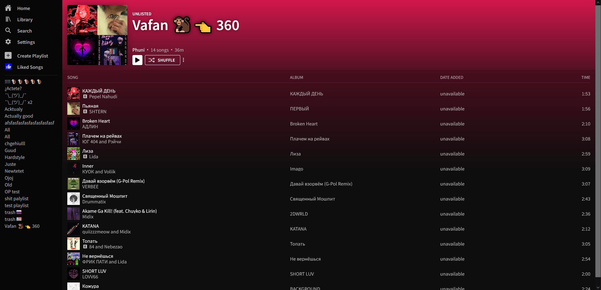

simple-cv
githubA simple tool to generate a resume from user input. Buildt with React & Typescript.
A very simple tool used for the game Path of Exile during it's 3.17 expansion. Used to track & calculate what mods to pick up.